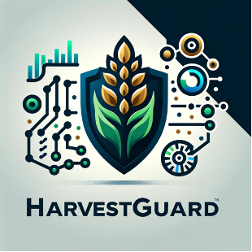

Mission : Reduce the burden of living expenses by lowering the prices of agricultural and fishery products
Vision : To revolutionize agriculture through technology, making farming more predictable, profitable, and sustainable for everyone involved, from small family-run farms to large agricultural enterprises.
HarvestGuard helps agricultural producers forecast price fluctuations and efficiently plan their production.
HarvestGuard is a cutting-edge agricultural technology solution designed to empower farmers and agricultural businesses with precise, data-driven insights for predicting market price fluctuations and optimizing production planning. Our product harnesses the power of advanced analytics and machine learning to provide accurate forecasts that help mitigate risks associated with volatile market conditions.
Agricultural producers face challenges in adjusting production volumes due to unstable market conditions.
Market Position: HarvestGuard is positioned as a leader in agricultural analytics and decision support, recognized for its robust technology, user-friendly interface, and impactful results. Our commitment to continuous improvement and customer-centric innovation keeps us at the forefront of the agri-tech industry.